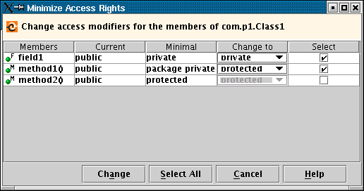

Minimizes access rights for the members of the chosen class declared in source code.

The table provides you with the name of the member, the current access, the minimal access possible, and a droplist showing possible access values. To change a member's access, select the checkbox in the last column and then choose a new access value from the droplist. If you want to select all members with one click, click the Select All button.